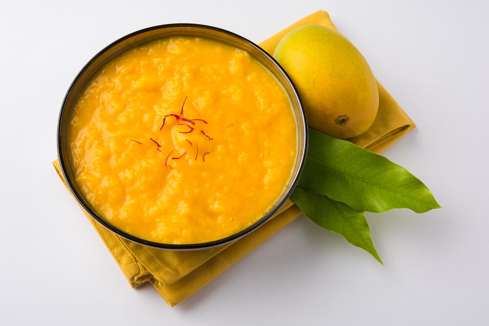

Home
Aamras

Description
Aamras (also known as amras) is a sweet dish in the cuisine of the Indian subcontinent made from the pulp of the mango fruit. The pulp of a ripe mango is extracted, usually by hand, and is eaten together with pooris or chapatis, Indian breads. Sometimes ghee and milk are added to the pulp to enhance its flavour. Sugar may be added for sweetness. It is often eaten at celebrations and weddings with cardamon and chopped fruits. A regional version of aamras is a popular dessert in Marathi and Rajasthani cuisines as well as Marwari and Gujarati homes, especially during festivities.
Originally a traditional dish from Maharashtra, it is very popular in other parts of India. Since the fruit is seasonal, being harvested at the end of summer, the need to preserve the fruit in the form of pulp has given rise to a moderately large mango-processing industry.
The word "aamras" is derived from the Sanskrit words āmra (Sanskrit: आम्र; lit. 'mango') and rasa (Sanskrit: रस; lit. 'juice'), so the literal meaning is "mango juice".
Ingredients
-
400 grams mangoes or 2 large alphonso or 3 to 4 kesar mangoes
-
½ teaspoon cardamom powder (ground cardamom)
-
1 pinch saffron strands – optional
-
2 to 3 teaspoons raw sugar or jaggery, as required – optional
-
¼ teaspoon dry ginger powder (ground ginger) – optional
-
water or milk as required – optional
Steps
-
Rinse the alphonso mangoes thoroughly in clean water. Drain all the water and dry them with a clean kitchen towel.
-
Peel and chop the mangoes.
-
Add the chopped mangoes to a blender. You can also add some sugar or any other sweetener of choice if the mangoes are slightly tangy or sour.
-
Blend to a smooth pulp.
-
Transfer the mango pulp to a bowl.
-
Add cardamom powder and crushed saffron strands.
-
Mix very well. To thin the consistency slightly, add some milk (dairy or vegan) or water.
-
Pour in a container. Cover the container and chill in the refrigerator for 30 minutes to an hour. Or you can serve straightaway in small bowls.
Serving Suggestions
-
Serve aamras with Poori. You can also serve it with Roti for a healthier option.
-
You could even add your choice of nuts and dry fruits to your aamras. If adding cashews, then fry or roast cashews until golden and mix it with the aamras.
-
In summers we serve aamras cold or chilled. To make a cold aamras, either refrigerate the mangoes for a couple of hours or add a few ice cubes while blending the mangoes.